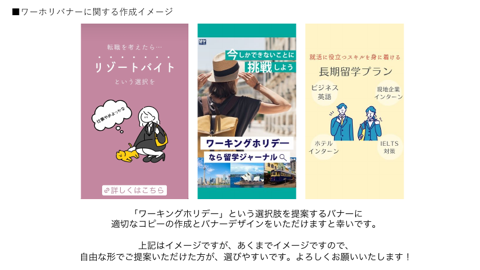

案件 04｜SNS広告
ワーキングホリデーを提案するSNS広告バナー
依頼主：留学・ワーキングホリデーをプランニングする会社
依頼の概要
大学生から若手社会人に向けて、「卒業したらすぐ就職」「仕事に疲れたから休職・転職」という限られた選択肢の中に、「ワーキングホリデー」という選択肢を提案するバナーです。バナーのデザインだけでなく、伝わるコピーも自分で考えます。
ターゲット
- 大学生から20代の社会人
依頼内容
- 「ワーキングホリデー」という選択肢を提案するバナーのデザインと、それに合うコピーを作る
- サイズ：1080 × 1080 px（正方形）と 1080 × 1920 px（縦長）の2種類
- 用途：Instagram 広告、そのほかのディスプレイ広告
デザインの方向性
- 訴求するメッセージが伝われば、明るくても暗くても、どんな雰囲気でもかまわない
- 参考資料（作成イメージ）はあくまでイメージ。自由な形での提案が歓迎されている
素材
写真の提供はありません。必要な写真は無料素材サイトから各自でダウンロードします。
写真を探すサイト
商用利用できるか、クレジット表記が必要かを、写真ごとに確認してから使ってください。
素材をまとめてダウンロード（ZIP・257 KB）全1点。1つずつ保存するときは、画像を開いて保存してください。
参考資料1点

reference_image.pdf
提出前のチェック
チェックの状態は、この端末のブラウザにだけ保存されます。